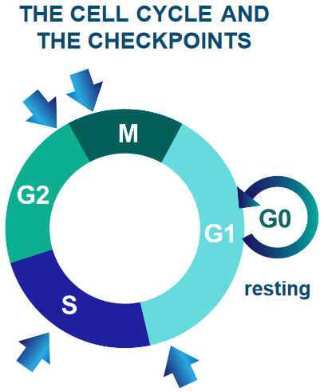
1 Cancer and Protein Misfolding
This week’s lecture aims to give a bird’s eye view of the course’s content. It’s not a comprehensive dive into any of chapter’s mentioned topics or sub-topics, but it does provide an okay foundation for moving onto more advanced topics.
1.1 Cancer: Cells, Genetics, and Biochemistry
This portion of the week’s lecture focuses on cancer origins and proto-oncogenes: genes involved in cell growth and division that could potentially be an oncogene and contribute to cancer when it’s mutated or overexpressed.
1.1.1 The Cell Cycle and Cancer
Cells - the building blocks of living organisms - come together to form larger structures called tissues. Cells rest, grow, divide to make more cells, change into specific roles, and eventually die. It’s important for cells to follow this cycle to keep everything working smoothly.
Furthermore, the human body has 1014 cells. Billions of cells undergo mutations each day.
Sometimes, these mutations can cause the cell to grow or divide vigorously. These are mutant cells. These mutant cells can also invade other cells if left uncontrolled.
1.1.2 Origins of Cancer
This sub-subsection examines two sources of cancer.
1.1.2.1 Clonal
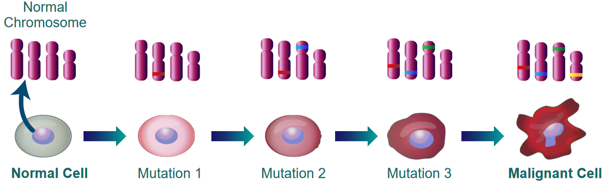
The above figure shows that cancer is not caused by a single mutation. It is the result of many mutations that accumulate over time.
1.1.2.2 Molecular
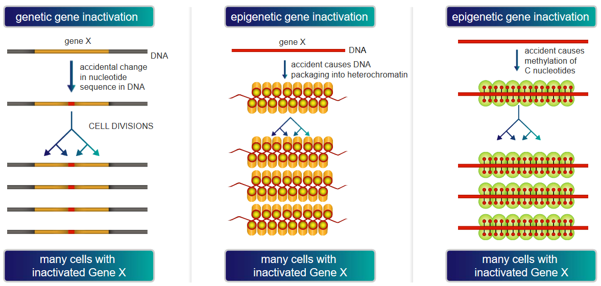
The above graphic demonstrates two main ways by which a gene “Gene X” could be inactivated, thereby causing cancer:
Genetic Gene Inactivation
In this scenario, “Gene X” could be vital for restricting cell growth and / or division. If “Gene X” happens to be silenced or inactivated, the cell would have no way of slowing its growth or division.
As the cell continues to divide and grow, this may cause cancer if the cells grow uncontrollably and the silenced “Gene X” is allowed to be transmitted to daughter cells.
DNA Packaging into Heterochromatin
Heterochromatin is tightly packed DNA that is not very accessible for gene expression. Nonetheless, if a crucial part of DNA involved in overseeing cell growth is silenced or is not as expressed, the processes that the “part of DNA” is involved in could lead to cancer if it causes cells to grow or divide uncontrollably.
Methylation of “C” Nucleotides
Methyl groups can attach to the “C” nucleotides of DNA. However, when too many methyl groups attach to these “C” nucleotides, the DNA may not be transcripted properly, possibly leading to cancer as the proteins that control cell growth and division may not be expressed properly.
1.1.3 Molecular Events in Cancer
When normal cells undergo mitosis, telomeres - the ends of the cells’ chromosomes - shorten each time a cell divides. Once the telomere is too short, the cell stops dividing for good. This entire process - in fancy speak - is called replicative cell senescence.
Canceorus cells don’t undergo replicative cell senescence for one of two reasons:
Inactivation of p53 Pathway
The p53 pathway is akin to a security system that ensures that everything is well prior to the cell dividing. If this pathway is inactivated, cells could potentially keep dividing and cause a tumor (i.e., cancer).
Maintaining Telomerase Activity For Too Long
A telomerase is an enzyme that prevents telomeres from getting shorter with each cell division. When cells don’t stop dividing, this can lead to cancer.
1.1.4 Rb Protein in Cell Growth
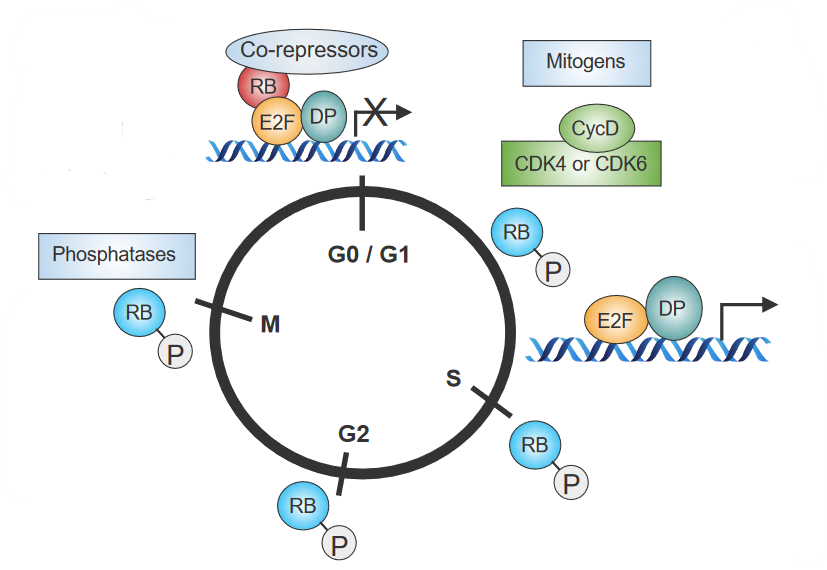
The above figure outlines how behavioral changes in Retinoblastoma (i.e., Rb) - a so-called “stop sign” that controls cell division - influences the cell cycle:
- When cells are done dividing, Rb is activated by phosphatases.
- When mitogens - signal proteins - don’t get secreted, Rb “sticks” to other proteins that also control cell growth. This inhibits the cell from dividing as cell growth no longer works.
- When signals cause the cell to grow, cyclins and CDKs (i.e., Cyclin-Dependent Kinases) become active. These cyclins and CDKs put phosphate groups on Rb.
- Because of 3., Rb and another protein called E2F cannot bind together. Certain genes that signal cells to grow become activated.
1.1.4.1 Removing Rb from E2F via Phosphorylation
The end part of Rb - RbC - only connects to E2F when it’s with another protein called DP. When phosphate groups are added to RbC, Rb changes its shape - this causes E2F to not attach to a specific spot on Rb.
1.1.5 Reaction Cycle of Ras
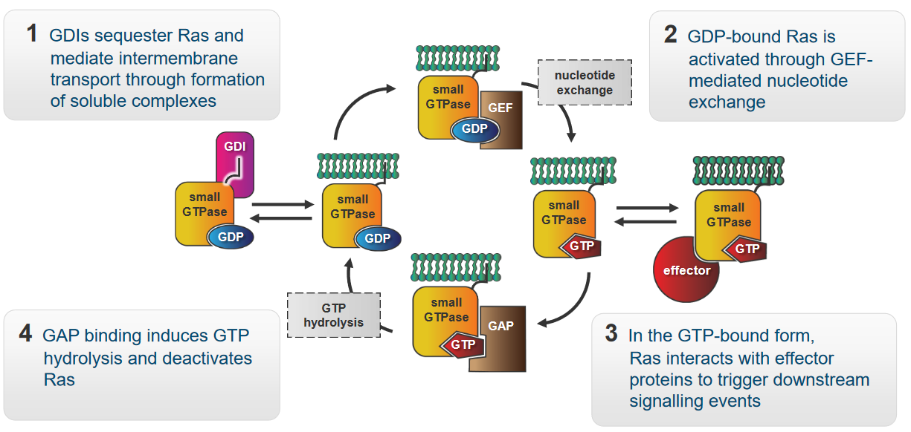
The protein Ras in the above figure is a molecular switch that controls signalling pathways involved in growth, survival, and proliferation. The above graphic also shows how Ras behaves in a cell:
- GDIs - “caretakers” of Ras - form groups with Ras. These groups are soluble and enable Ras to move between various parts of the cell membrane.
- When the Ras has a GDP molecule attached to it, it enters a “resting” mode. A helper called GEF steps in when it’s time for Ras to become active again. GEF helps Ras exchange GDP for GTP - this gives the Ras energy to do its job.
- At this point, Ras is capable of interacting with other proteins called effectors. These effectors enable Ras to start a chain reaction of signals.
- When a protein called GAP binds to Ras, GAP breaks apart Ras and the GTP molecule that it was originally bound to. This is called hydrolysis. Ras goes back to its resting state.
1.1.5.1 Examples of Ras Mutants
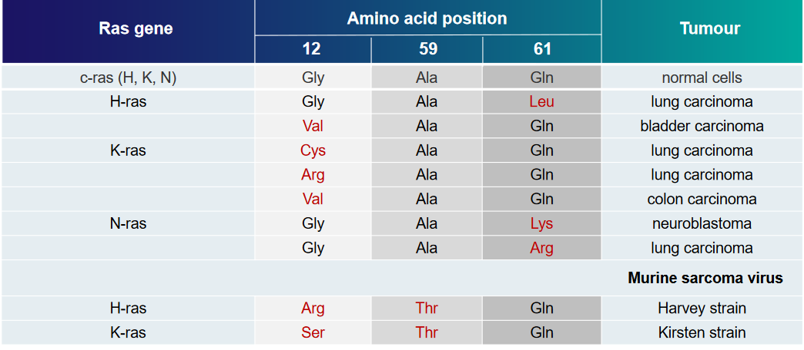
The above table displays some examples of Ras mutations and the kinds of tumors that they can cause.
Two structural mutations are covered in this week’s lecture:
G12R Mutant
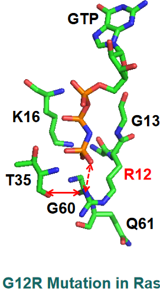
PyMOL Visualization of G12R Mutant of Ras A guanidium group appears here and has new interactions - a salt bridge interaction with the \(\gamma\)-phosphate of GTP and the hydrogen bond with the carbonyl group of the T35 amino acid in the figure above.
The sidechain of amino acid Q61 also moves away from Ras’ binding pocket, hence GTP is unable to be broken down in this mutant.
G12V Mutant
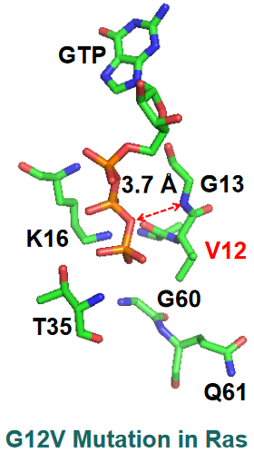
PyMOL Visualization of G12V Mutant of Ras There’s a big distance between the nitrogen backbone of G13 and the \(\beta\)-\(\gamma\) bridging oxygen of GTP.
1.1.5.2 Inhibiting Ras Activity
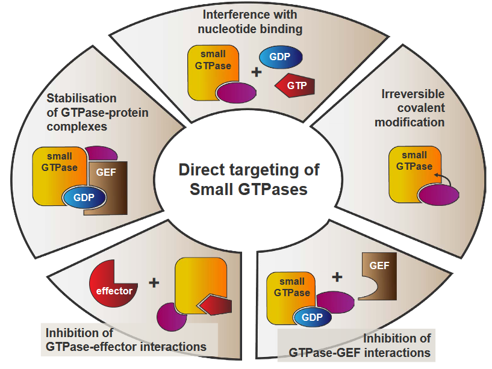
The above figure outlines some possible approaches to inhibit Ras activity:
Stabilization of GTPase-Protein Complexes
This refers to finding ways to keep GTPases bound to their GTP molecules for as long as possible. The longer the two entities stay together, Ras activity will not happen.
Interference with Nucleotide Binding
Ras will be unable to switch between its active and inactivate staes as a result of this, hence downstream pathways don’t get activated.
Irreversible Covalent Modification
A chemical group could be attached to GTPases, thereby changing its structure and preventing proper function. If a GTPase is unable to activate Ras, then Ras activity cannot resume.
Inhibition of GTPase-GEF Interactions
This directly prevents Ras from being activated, essentially stopping Ras activity.
Inhibition of GTPase-Effector Interactions
This disrupts the communications that Ras uses to activate pathways, hence cutting off Ras activity.
1.2 Transthyretin (i.e., TTR) Amyloidoses
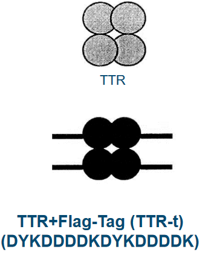
TTR is a blood protein that’s found in our blood in minuscule amounts (i.e., about 5 \(\mu\)mol) and carries two things around in rodents: retinol and thyroxine (i.e., T4).
TTR is about 127 amino acids long and form groups of four called tetramers. These groups carry two retinol binding proteins. When TTR is mutated, this can cause degenrative diseases.
1.2.1 Alzheimer’s Disease (i.e., AD)
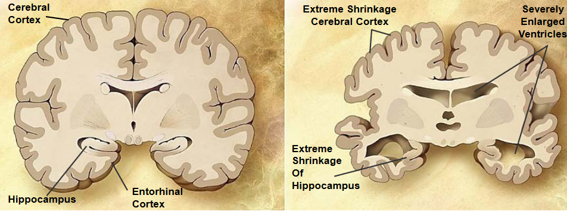
Alzheimer’s disease is a chronic neurodegenerative disease that causes 60% to 70% of dementia cases. 26 million patients suffer from it as of the time of writing.
AD starts with short term memory loss before going to language problems, disorientation, and losing body functions in the long run (before the patient dies).
1.2.1.1 APP Processing and AD
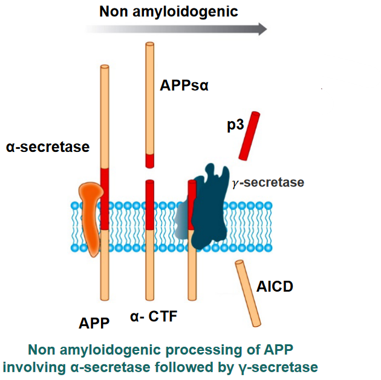
APP is a protein that is processed in our brains in a certain fashion:
- A “pair of scissors” \(\alpha\)-secretase cuts APP. A secretase is a protein that cuts transmembrane proteins into smaller parts so that it can be degraded or used elsewhere.
- Two fragments called APPs\(\alpha\) and \(\alpha\)-CTF are released: APPs\(\alpha\) is released to the outside of the cell.
- Another “pair of scissors” \(\gamma\)-secretase cuts \(\alpha\)-CTF into two more parts: p3 and AICD.
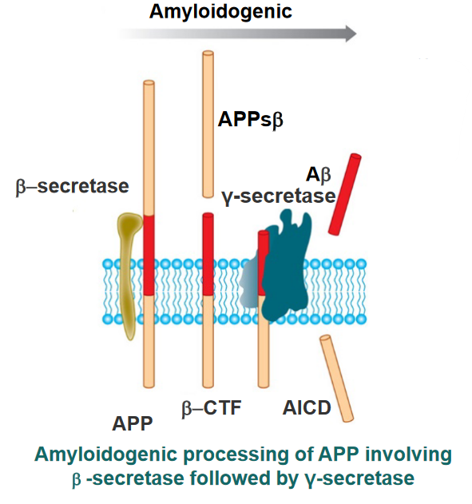
When things go awry, \(\gamma\)-secretase cleaves \(\alpha\)-CTF to form AICD and A\(\beta\). These amyloids form fibrils that are responsible for Alzheimer’s.
1.2.1.2 Inhibiting Amyloid Fibril Formation
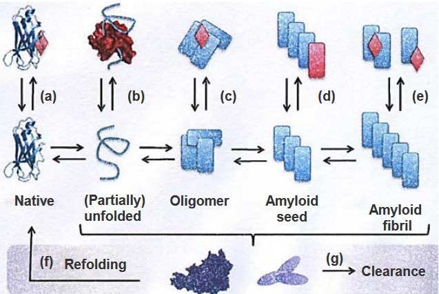
The above figure lists strategies to prevent amyloid fibrils from forming (hence leading to Alzheimer’s):
Stabilization of the Native State
By maintaining the original shape of p3, it won’t turn into A\(\beta\) and form the said fibrils.
Sequestering Monomeric Unfolded State
Special molecules could be used to keep unfolded proteins from sticking together and forming clumps (hence inhibiting fibril formation).
Stabilization or Promotion of Off-Pathway Oligomers
Sometimes, proteins can come together in a way that they’re not supposed to. These are called off-pathway oligomers and can lead to fibril formation.
\(\beta\)-Sheet Breakers that Stop Fibril Elongation
Amyloid fibrils are linked together by structures called \(\beta\)-sheets. Breaking these sheets stops amyloid fibrils from forming.
Disassembly of Amyloid Fibrils
Disassembling fibrils can help stop the progression of Alzheimer’s disease.
Refolding
When the proteins that form the fibrils get refolded properly, they no longer form fibrils and also don’t contribute to the progression of Alzheimer’s disease.
Clearance by Chaperons and Antibodies
When chaperones and antibodies work together, they stop amyloid fibrils from sticking together and causing problems. This also prevents amyloid fibril formation.